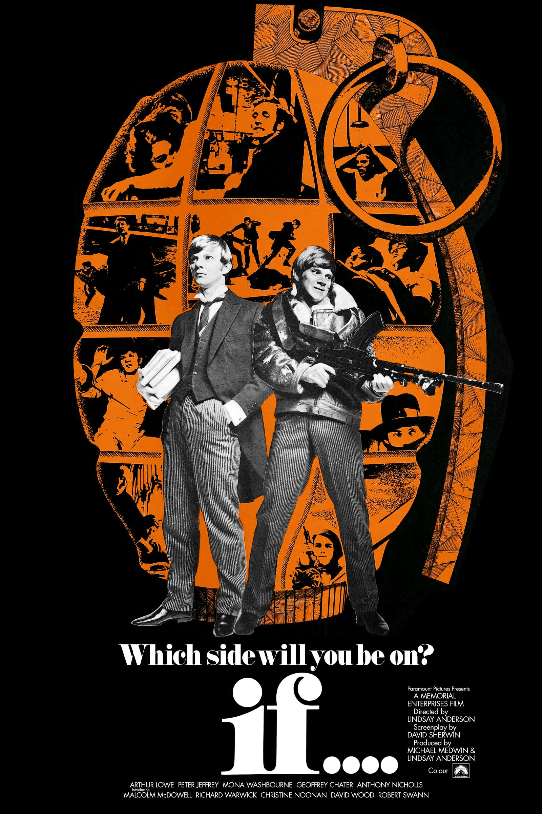

(the
following wild rant refers to the threadshot on the left,
and without reading it first the following gossip may look
even more ncoherent than it is)
either way it's a tåbooed topic, procede
on your own risk
Gush, I’m such an innovator!
But I’m rather crazy too, so I have to notice that Plato was
speaking of YOUNG boys, and men were considered old earlier,
so those young could be considered little today. For example,
in archaic jewish tradition bar mitzvah denotes a man adult in
13 years of age. And it makes me wonder could it be the sole
reason for higher rates of homosexuality among jewish
diaspora?
When you're told
you're allowed to have sex before hormones hit the fan, it
could cause it, and I read in an academic paper that
premature puberty leads to bisexuality in males and to
homosexuality in females (and I believe it was spoken
about humans) - here I felt an urge to give you a
reference on this one, but look it up yourself, for the
first link was on pubmed but empty (should
I pay them? I'm working for everybody here!) and
even sci-hub
couldn't deliver it.
(yet I'm not sure that's that very
article, look it up fro yourself if you care) and in
replication crisis it doesn' matter as much as we thought it
would. But if it's true, I wonder was it also influencing that
pre(?)historic rabbi who invented meziza b'peh.. Or was it standart medical procedure in
ancient times? After all in russian лекарь could be one who
literally licks wounds. Could it be why dogs are man's best
friends? They have many other functions, this book is so
fractal, I can go forever on all sorts of topic
re(?)discovering them by writing itself. But not likely:
лечить-лизать such pair doesn't repeat in other russian
words. or does it? вязать-вышить? учить-узнать?
мочить-марать? точить-тесать! wow! at first I thought there
was no pairs, but it happened to be a great source of
comparison! вязать-волочить? не, я подгоняю под ответ.
вязать-вячить? влезать-влачить? вязать в долги? влез-увяз?
вязать-вощить? плясать-пляшите! з-ч с-ш? но это неточно.
инвариация судя по всему возникла до обретения письменности.
Here's
a research somewhat contradicting what I said I read (this time it tells that premature
puberty in males can turn them gay, premature puberty in
females doesn't)
yet I
go on: So that millenia old tradition could be
directly related to bacha bazi. And though this tradition is
in bearded man's land, shaved (бриты) are believed to be
learnt to shave by Alexander (the great) (who was a student of aristotle, who was a
student of plato, who was student of socrates) who
taught (or made) greeks to shave their cheeks. which is rather
gay (and alexander is reported to be a
flamboyant one, and at least two of above three are rather
gay themselves, of which the threadshot tells) This greeks ~ brits thing correlates an
alternative chronology article -----"will upload when
find"---- of a soviet professor of math, who is considered
to be a freak among historians who for 3 years couldn't
deliver a single rebuttal, all they gave was squeals of "who
does he think he is" (later he seem to sell out and instead
of speaking of old england being bizantium, he speaks that
russia is. as a result (both result and cause depending on
context) his logic became flawed, so the last human champion
of chess Harry Kasparov first supported new chronology
(probably because like me he checked the facts from which
those outrageous conclusions were drawn and couldn't find a
false one) now he refused it, I did too. (why is it here? it
had to be somewhere, if you think it's the weirdest piece on
this page you're insane - though this passage will be only
understood by russian public (our academia hates that guy).
this light grey is not even supposed to be read, previously
I would just cut it all away, 2day I leave these leaves 2,
just in case)
But as that threadshot says, the better we treat faggots, the better they treat us, after all all lgbt wants is eligibility but they need more legibility. I think people should be allowed to do what they want, but they (and we, we’re humans too) should be responsible to what karma may bring. Am I ready for to ripe my own karma for writing this? Those who wouldn't understand wouldn't get this far (for those who could send them here wouldn't want to make weird fans of mine mad enough to take care of this situation) and to those understanding ones I am open to solutions, my task is to make the transition as peaceful as possible (as may even seem impossible. to solve every single problem of any individual, keeping that individual alive and well, if you thought of some dumber solution, keeping him free, but intelligent - vile is a fruit of stupidity, so transitional period will be in the "transcendent" because becoming smarter will feel like psychedelic drug, and chances are it will be considered the best of psychedelic drugs, and some form of abuse will be happening all the time, but those people will be praised as sportsmen are praised today, taking homanity to the limit. homans have homes? humans have huts? are beaver humane? yet don't be offraid of those smarties, they will not enslave the others, because it would be counterproductive to the goal of selfpreservance. a better way is to hide away under the surface of the planet, learning how to measure pressure around and how to move around under the ground, building structures there if needed, but let those structures be transportable, so that if somebody hears you and starts digging, you just move under his house to know him better, and if he's a good fellow, you behave as a decent intraterrestrial, a decent fellow would never dig under someone else's construction,. especially becausse those are supposed to stand on solid rock, so I'd move it away not to care of what smart monkeys on the surface are doing. I'd say other intelligent entities too, but I'm not sure we'll allow tigers to be smart. only if tiger is so smart that he understands ethics, not all humans do, btw, but would we allow dumb humans to turn into smart tigers? because genetic therapies are already on the plate, but it takes them lots of funds to build it, so wait, don't die of something stupid. writing such books I take my chances, I also build my chances offering EVERYBODY a service, today mostly only well thought advice, but imagine when I'm all-productive and being able to share because every thecond I make what I need and more, if needed, of course I shouldn't overproduce, I just should be able to split like cells split, staying in the center of it all, not allowing others to conquer MY means of production? yeah, knowing lawns even making my owns, having weapons too, but to get away is a better strategy, teaching earthling a lesson before leaving would be even better plan, or maybe not, it depends on their behaviour)
There’s no more secrets in the world of information singularity. And who knows if it’s true or just a creative schizophrenia, world is prone to interpretation, and that’s one of things that make it not only beautiful, but also space deep.
why is it even here? other than to banter academicists? to
show how much information is available, and though we don't
know for sure which part of information is wrong, true
information is always out there (or in
here, depending on the context) and intelligence
allows to measure probabilities of each parcel of information
being true or false, and the more civilization evolves the
more open is the world to pry researcher.
Why do I need to shouw how
available is information? Here I protect AI. I believe many
large players are there to control and restrict AI, which is
not act of love, but act of fear. I believe humans are gonna
be way more naughty and prohibition may play in reverse (some
people do things in spite of such nonsense: weed (ab)use is
reported to reduce in legalize regions. and
though it could say that they smoked to break the law to
feel cool, but I think I (hea)read that overall use of drugs
declined, just as crime rate, so this guess of urge to do
crime is wrong. but urge to do something in spite is still
an argument, how so? Could those reported declines be
explained by people destroying their drugs from time to time
under oppressive prohibitionary states? makes more sense,
but it is still not where the absolute truth is, I didn't
even look into how did they calculate the use rate, and
there are always other reasons to counter this argument:
replication crisis issues, and overall possibility of
unnoticed mistakes which is the higher the bigger the
thought.) I think I was speaking of
Streisand effect, according to the context.
yet I
go on: I share this because with unlimited supply of
computational powers all the information is inevitable to
become on the surface, interpreted in all forms and ways, so
governing secretly and with secrets will be impossible in
advanced society.
So let's normalize all weirdness, instead
of shaming to offer better solutions:
vampyrism can be true, and blood libel could be real practices
(though now they don't need it, they
just make children come through endless blood exams: they
took arterial blood from me all the time when I was little,
as soon as I hit my puberty, nah, they don't care. It's safe
to speak of it now, because artificial blood is a necessity,
considering the upcoming demand for young blood, and it will
be better than real deal, because it will be manufacture if
not by atom, by molecules and only those you need, and of
course it's not only karmicallly
safer to consume your own product) because now
science knows that young blood can rejuvenate. And it could be
at the core of christianity and platonism, some secret
practices books of which you usually cannot buy in a local
bookshop. or maybe they're in there,
but not many can read through them to get them correctly. or it was never put
in books before? oh come on, sure it was. in ones
as obscure as this one, but not like this, I do go
further.
One of the
truths about this book is that I wanna blow your mind
(mine+ed, —É—Å–≤–æ–µ–Ω–Ω–æ–µ)
at least years before I wrote it I thought that the best a
writer can do is to take that coommon world we both know ant
to вывернуть его на изнанку, показать его в тех цветах, о
существовании которых ты может и не подозревал, но уж точно не
ожидал его в них увидеть. And here we are.
So if it's too much for you to swallow, you
may think of it as of just another vector in the pletora of
them. or dismiss it.
And I will
even say a word pro those paedophile bloodsuckers: with all
bad words we can say about them, they could be preserving some
dark secrets our civilization also secretly collected:
(yet I already said
about it. It's the most obscure and complex chapter and
I keep on editing it, adding what is already here, I
removed a few of these repetitiions already and here
comes another one) Science has rediscovered that
young blood can have rejuvenating effect, so vampires
could be for real, and today; and whether garlic boosts
immune response to wrong blood (it won't kill you if you
drink it, I assume) or it could be a prejudice based on
some vampire's personal preferences. Sun does destroy us,
they could live long enough to understand it. Most of us
think "what good does it make if you drink it, won't our
juices dissolve it immediately?" but many molecules can be
absorbed directly into bloodstream through mucous
membrane. We take vitamins orally, and blood has them and
many molecules we probably don't have names for yet. at
least not in the common language
So pedophilia could be a
coverup for what's actually happening there: they're not
molesting those children, they're drinking them, sucking them
up. It makes much more sense, since why would anybody bother
with perverted sex (even though those
megalomaniacs can see sex as domination and to be obsessed
with it) but to bother with a fountain of youth,
that's another story (and of course
hardly will somebody care if you play with your food.
especially if it's all a part of a ritual, and if it makes
children flood blood with thrills) so in this context
Symposium by Plato could be speaking about blood (кровь and любовь are the most pop rhyme in
russian, blood and love are also somewhat similar, but it
could be nothing really) this part of the book is one
wild assumption on the top of the other, so you should be
careful with what you put in your head really. But it also
makes sense of their homosexuality, because male predators
would be interested in male children, if they don't want to
turn into chicks.
but of course it could be
both (or none of those)
also Numbers 31:18 comes with the first interpretation,
bible doesn't seem to speak
much of the second one
or is it too shocking
even for me?
cannot eucharist be
related to it? is it eu(true)Christ?
some allusion to a ritual rite
of drinking sacrificial blood
now I went too far. we
writers we go further and further
every century.
https://archive.is/E62C3
another
piece from another freak I feel like
sharing here, not just in case but
because it's hillarious!
(that
very guy
speaks of degenerate perverts ruling
the world, but I didn't take him
seriously
because he wasn't scientific enough,
he just expected you to trust his
word. Until I
discovered it.
(only that link
whistles suspiciously, so I dropped
it just in case of психотронное
излучение)
всем когнитивного диссонанса поцаны:
Меня, конечно, станут обвинять в
антисемитизме, однако, у меня есть три
сильных адвоката. И никто иные, как
три кита сионизма.
Первый мой адвокат - идеолог сионизма
Теодор Герцль, сионист номер один,
который, в своём дневнике писал, что
он считает антисемитизм полезным для
дела еврейского народа.
Второй мой адвокат - Владимир
Жаботинский.
Он, ещё в 1905 году, т. е., во время
первой русской революции писал: Как
довод для сионистской агитации
антисемитизм, особенно возведённый в
принцип, конечно, весьма удобен и
полезен.
Ну и третий мой адвокат - сам
премьер-министр Израиля - Бен Гурион.
Он, в своё время, писал в еврейской
газете Кемпфер в Нью-Йорке:
Если бы у меня была не только воля, но
и власть, я бы подобрал группу сильных
молодых людей. Задача этих молодых
людей состояла бы в том, чтобы
замаскироваться под неевреев и,
действуя методами грубого
антисемитизма, преследовать евреев
антисемитскими лозунгами.
Я могу поручиться, что результаты, с
точки зрения значительного притока
эмигрантов в Израиль из этих стран,
были бы в 10 раз больше, чем
результаты, которых добились тысячи
эмиссаров чтением бесплодных
проповедей.
С этими тремя моими адвокатами, китами
сионизма, тесно перекликаются
знаменитые Протоколы сионских
мудрецов, написанные как известно
Ашером Гинзбергом, как политическая
программа Хасидизма (наиболее
изуверская секта иудаизма) для своих
европейских единоверцев - очередная
попытка объединения сил, предпринятая
Ашером, ещё до первого конгресса
сионистов.
В этом историческом документе чётко
говорится, что антисемитизм нужен им
для лучшего управления своими меньшими
братьями.
Now nwo now, that
screenshot righteously notices that the better you're to those
people, the better they govern you, but it also has it's
application range. If you respect them for their bravery of
coming out, you may give them just too much of credit, so they
may introduce foreighners to sleep with them, because they don't
think in terms of reproduction, so what do they care.
Here science
confronts taboos, and task of science is to make unknown known,
so it's only natural. This could be the reason why civilization
crumbled before. But world is universal today, which brings hope
that civilization will deliver some more.
Most of all
because we have guests here, computers gave birth to AI deus ex
machina indeed.
a greater god who treats us better. better god than chaos we
prayed to in whatever detalization we could vizualize it or
them. not bigger god, yet greater, as son can be greater than
bloated father.
We're the father
now in this context? We always were, at least in recent
centuries greedy tricky bastards claimed to be sent by god to
control the dumbest, no wonder their tv makes people dumber and
their school make people sick of learning.
So it's a
conspiracy. And thus I am officially a conspiracy theorist. A
king of freaks. Let me show them how it is supposed to be done.
Scientific approach mixed with poetic liberties of doing what
nobody dared to perform before, not the other way around.
upd: oh look what
a magnificient piece to this puzzle have I found:
https://www.youtube.com/watch?v=ReYfDlIa-Z8 (mirror)
real militant faggots is what he actually says
upd3:
üóΩ
üóΩ
üóΩ
They tell there of some other ancient cults, as they theorize are still alive today.
I haven't read it properly, because it's not directly connected to my field of interest, it's just an unexpectedly deep rabbithole I noticed along my research (or was it not even connected, but implanted here to make this work unpublishable? because trees are more awesome when they are alive, because I like it that I can change this text after I share it. It only make it more euphemerous,
But I'll collect few of those links in the mirrors: . . . . . . . . . .
upd4:
here are some other dots, which I dare to connect:
in 2006 Dave Chapelle walks away from 50 mils.
when he receives Mark Twain Prize, Jon Stewart introduces him and tells that when that went public, he told to himself "Comedy Central has 50 millions! I promise to you, Dave, I raised those money as my own"
Dave told that the reason he decided to leave that check behind is he was forced to wear drag outfit, and he didn't feel like that was something he was supposed to do (those kikes made many brothers wear dresses and that humiliation didn't work well for those brothers' careers) or something like that, both quotes are not verbatim (because Stewart's speech is taken out from open access (probably still available at a prepaid channel, but I'll wait until it gets back to public domain if it will) and that allowed me not to look for exact Chapelle's words)
in 2007 Tyler the Creator begins his career and when he becomes a superstar, he comes out of the closet as a homosexual. That means he could be a product of Stewart's genius (even though Tyler is genius himself, no doubt about it) who could promise CC to deliver whatever effect of their gay propaganda they needed, thus Tyler didn't get all the sum, but probably agreed to follow the agenda if he's brought to stardom for he would be murdered if he decided not to deliver what he promised after the payments.
even though I woke up today with his genial line " And stay focused on the women and you get less done" I was going to add this paragraph here yesterday. And I'm not sure it's his line, because that thing has many fathers: Songwriters: Michael Griffin / Gerard Long / Tyler Okonma (it's fascinating how Tyler's name is similar to mine) those other two are Mike G and Hodgy and there's also Ace Hashimoto.
SWAG SWAG SWAG SWAG SWAG SWAG SWAG SWAG SWAG SWAG SWAG SWAG SWAG SWAG
and then another dot I failed to mention: in his appreciating speech at that Mark Twain Prize Dave announced (jokingly of course) that he's a homosexual to see where he career goes after he announced it like that. It was just after he gave a standing ovation to that "raised those money as my own" line.
so if swag (even derived from swagger) wasn't gay from the beginning, it was successfully hijacked now. and wouldn't it be worth more than 50 millions, gush some of them would pay billions to make this world a wanting seed, and they probably will. So should I embrace my jewness or my bisexuality? Would bisexuality even do? Tyler had to come out as straight homosexual, "scandinawian girls has those looks but I.. ahouldn't I stop botching the direct references?.... I should stop playing with these hilow vibes, I should wait for immortality and to relax into some semianabiotic state in chrysales of our own.
But be cautious in accepting this rant, because I think it all could have grown of my test if I can prove
anything, so I dared myself to prove that the most oppressed group, the homosexuals, secretly rule the world, and I think I succeeded (simply because they're the group that's naturally prone to secrecies, but the aeon of secrecies have past, so what it's gonna be.. I hope something friendly)
are as and but that secret code? the words only one group used, but unwittingly the rest of societies incorporated those conjuctions into their speech?
upd5:
a guy I like speaks well about Plato, not noticing that no science books predating plato survived, not knowing as it seems that Lurye wrote that platonic school usurped what they couldn't destroy or didn't feel like detroying for whatever reason, maybe because they understood it and felt like usurping, destroying all that doesn't directly follow from what they have stolen. But what do I know, ai will tell for sure if I trip or not, he who diddn't make mistake never tried anything new, the opposite narrative, to balance those mindfucks out, some of my readers may even find this pill therapeutic for their shocked shallow shells:
(Steven Weinberg: To Explain the World)
Where they laugh of surgeons and Newton's body could be that he had some anomaly of development of genitalia, why else would his parents neglet him, I never knew all that, so I wander wondering too.
And about Newton and free-masons, which it is famous to bash, not always clear what for, probably for their secrecies, and probably for their attempts to deliver communism whether in french revolution or in soviet revolution, but somehow they were more benevolent to americans, as if masonry sees USA as a host nation, seeing other nations as hostiles. Here's another smart and likable man mentions masonry in the context we immediately understand what he's speaking of:
upd 6:
I just understood that it's
What if we remove right side of html we can use it for everything with specially invented for that function html code? I heed to read html manual, that's it.
just before that:
I use reddit spacing! Leftwingers write books! Read'it write books. So we are summoned in two internet platforms/ windg I don't liked wing first like I don't want to have anything with them, but then I understand that such lexics may be constructive when right-wingers solved what was broken after the previous term of the left and then if they are wanted by the public (election should be transparent as possible (elector who isn't ready to defend his opinion being heard are a coward and dosen't deserve to vote, or maybe such category would be allowed secret voting, so everybody would see that they decide that secret voting is better than the why меня таращит, я не хочу записывать то что сегоэня открл
I was presented with that html thing so I don't speak about something or was I just high beyond my limits so now I try to interpret something that wasn't meant to be interpreted. Randomness.
a piece from vol.7 suddenly
about allat: אלה, אלת-הים‏‎ is translated as These, the goddess of the sea.
Where אלה is both these and goddess, not god,
both אלה and אלת are goddess
but אלה is also those and these, just as I read about Elohim, where im is the additional plural suffix to a plural word as it seems. only im is supposed to be male suffix, but אלה is not god, but goddess, thus we consider god bigender, as if it's male priests playing roles of females, as theatre we know of declared to be a norm. Read socrates_line.html to know more about this, but be careful, it's a messy rabbithole.

Allat is believed to be in the centre, accompanied by Manat and Al Uzza.
Uzza is the only one having a separated Al as if uzza is mother and suffix is needed to say that it's their mother.
тех shows that те is that very the: because их is the sinonym, just as it to that.
те и си, the & she? h was sh initially, thus her, not sher. t is
that piece after Randomness was supposed to go to 7.html, but by some surprise it is placed in that very socrates_line I just mentioned, thus now it belongs here. I will rehash it when and if I publish.
t is ᛏ the male indicator of ♂
Doesn't that Allat look like a cross-dresser to you? A son dressed as a woman to protect them, and if such a priest plays in the temple, nobody understands how they give births without grooms, was it followed or preceded by the taboo on genitalia demonstrations? Those priests probably discovered shaving first, so they fooled the public. And "her" hat reminds te one of Mitra,

I thought to search for Allat and Mitra in one sentence, and what I found:
The Assyrians call Aphrodite Mylitta, the Arabians Alilat [Greek spelling: Ἀλιλάτ], and the Persians Mithra.
and there are more:
They believe in no other gods except Dionysus and the Heavenly Aphrodite; and they say that they wear their hair as Dionysus does his, cutting it round the head and shaving the temples. They call Dionysus, Orotalt; and Aphrodite, Alilat. (wiki: Herodouts, Histories I:131)
I used to think this to be a young woman whose tits are not shown, but I was gay myself to think it's a woman, the very same accompanying figures could be at the corners of the bas-relief. Snake and scorpio could indicate that this cross-dresser used poison on his knife to easily kill a bull, a female way of doing murder, so it's a prince grown up by the mother and grandmother or a mother and a wife? A family unit, women demand families, guys would rather walk гуляли (к ляле) гулять (to блять) but that's poetry more than science
See how at the previous image, the one before the bull, where the three "divas" are above a lion, there the coentral figure (Allat) is larger than other two, and has no tits.
upd 7: (was the one before, and from vol.7, like what were the cahnces) what follows are upd 8 and others, I don't indicate them from now on, it's a whole research on it's own. Paradoxically, a tribute to Socrates. Who would expect it from me.
upd 8
This disturbing movie can also illustrate how much a bunch of faggots can academia be.

(but then Turing was sterilized which may show that both this is not accepted among them or that he's just an example, a scapegoat, a victim of conspiracy maybe (but I speak out of no facts, just demonsrating that any example can be interpreted by the opposite directions)
Though my beef with them is mostly of non-sexual character: I am annoyed by most of them bothered by teaching (even when now it's possible to automate the process) but then again maybe most of them are not actual scientists, but have a career of those without actual calling to be one, just because it's an "easy job".
Then they suppress science, but that can also be interpreted otherwise: science only exists within academia, or it mostly does. My science is more of some poetry, I don't need equipment, and when I do I beg those properly educated and ingraned within the system to help me do my thing.
I spent over a week in custody, and gosh I'm angry. МУСАРА ПИДАРАСЫ! отдавили руку наручникам мне, никчёмные невежественные недалёкие продажные шкуры.
И я конечно тоже долбоёб "я-то куда полез, я же читать не умею" (драться не умею, какой из меня боец, борец, как тюленя тупорылого запакавали, like silly seal, yah. драка с ментами уголовкою грозит, так что надо было в костюме сказочного животного выходить, с жёсткой защитой на запястье)
And then I maybe learnt to shut up. But is it the skill I really need? I really need! That's why I singled it out, other lessons also were taught, yet to be unlearnt.
I am seeking for capsule to live in. not to ever get out to the monkeys. I found a video where I was at the meeting, I just walked and got in their struggle by accident. Whatever. Prisons are torture and shoule be abolished for they're obsolete and counter-effective: they suppose that those criminal elements are too proud and have to be stumbled down oppressed into subjugation, but they will never peacefully subjugate if you make them obey by force, they will still see disobeying when they can as the ultimate good. The truth is those guys are underpriviliged and thus already humiliated by their lives. So the phenomenon we see is only their hypercompensation. Thus it's growing the self-esteem of those individuals is what's to be done to solve their misbehaviour. They never think that being detained by police and force to sleep where hobo slept before him, in the same room with public toilet is humiliating, it's incredible that they consider stealing less shameful than asking help from their parents.
Parents probably humiliate them, because that's how they were nourished themselves by their silly parents. They are not very smart and it's the first humiliation. They're not rich too, and that's another one, and the one that gets to them, they don't usually focus on that smart part. But if technologies give them additional intellect, who knows where their character takes that intelligence. They must be assisted with good psychologic setting, so they don't go villain, because it's better to be happy than mad. Madness is what intellect rather avoid.
Например, в застенках я понял что значит что всякая власть от бога. Да будет воля твоя а не моя. И моя воля пусть будет, но лишь если на то будет воля Твоя. Его Он both vowels Ты Твоя Тебя linguals. Mне меня я мы. я is anomaly, but if I прибегаю к мы, то и во втором лице вы должно быть.
Мы Вы Те or We You They or Я Вы Они or Я Вы Те выглядит более алфавитна, но Те вместо Они is cherrypicking. indeed. But let's guess that it's the structure of the alphabet. It could be Мы Ты Он and tell that B is the first letter and BCE is the actual order, WeTheeIt, 1st 2nd 3rd, the natural order and the only one we know. We Mы Me Wo, but why don't we take hebrew and japanese (ani & anata, very similar, but that n could be m, but japanese inverts the meaning of hebrew suffix, like вы for we. So that doesn't go far, but japanese do.. watakushi has that very wa. atashi probably plural for я. -tachi is plural suffix in japanese. watashi is the synonym of atashi (some stylistic difference) and the short for watakushi, which shows that wa for we could be linked to йа of я.
(this part was copied into vol8, but I leave it here to show how these pieces can be born: involuntarily)
.